Die Frage — oder das noch nachglühende Ja — ein Verlobungsmorgen in der Höhenluft.
Eine Verlobung in den Bergen ist die Geschichte vor der Geschichte — die schwindligen, ungläubigen Stunden direkt nach einem Ja. Wir stiegen ein Stück hinauf, lachten viel und ließen die beiden so neu darin sein, wie sie sich fühlten.
Es ist zugleich die perfekte Probe — eine entspannte Stunde mit der Kamera, die den Hochzeitstag zur Selbstverständlichkeit macht.
Planung Dolomites Wedding Planner · Foto Blitzkneisser

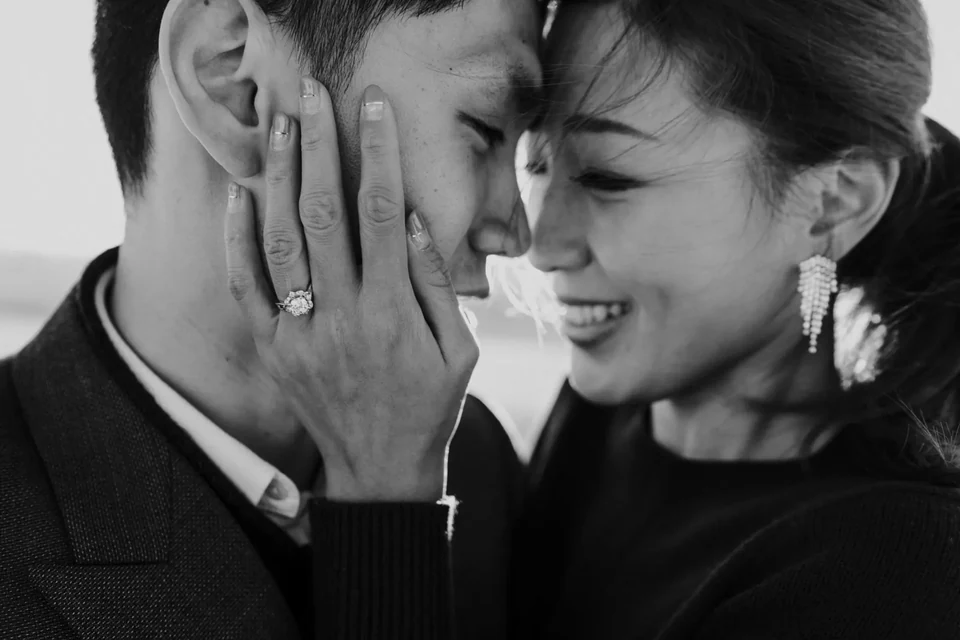
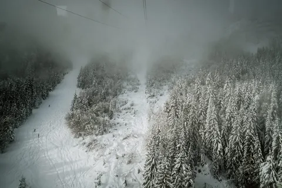
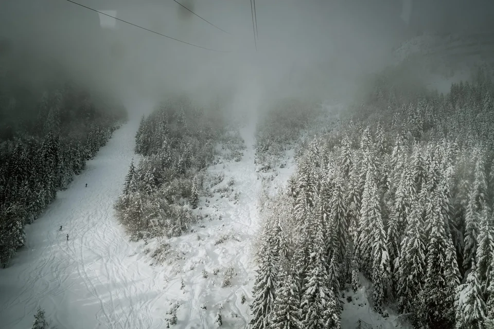
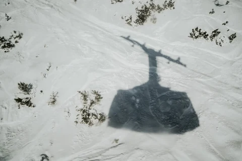

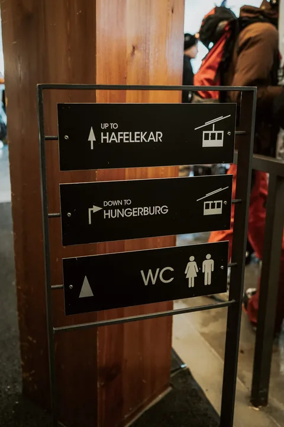

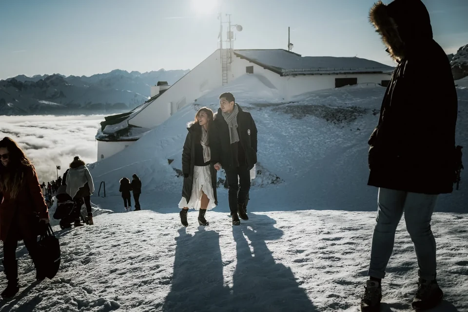
Ein laut ausgesprochenes Ja — nur die Berge sahen zu.
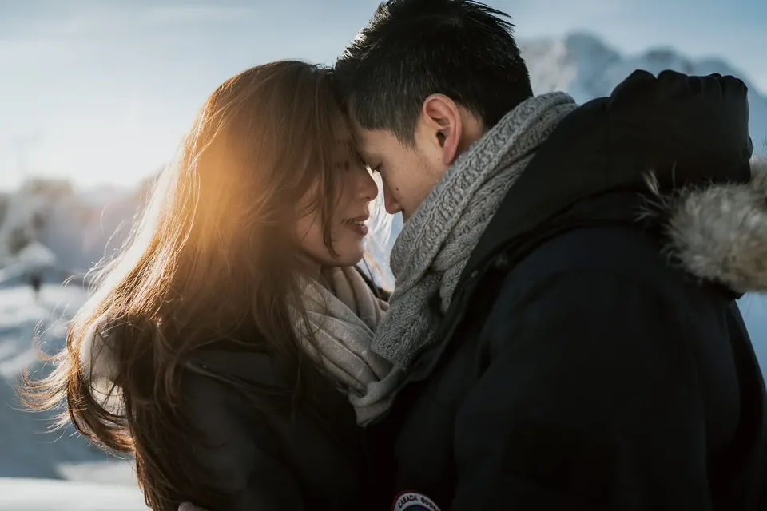
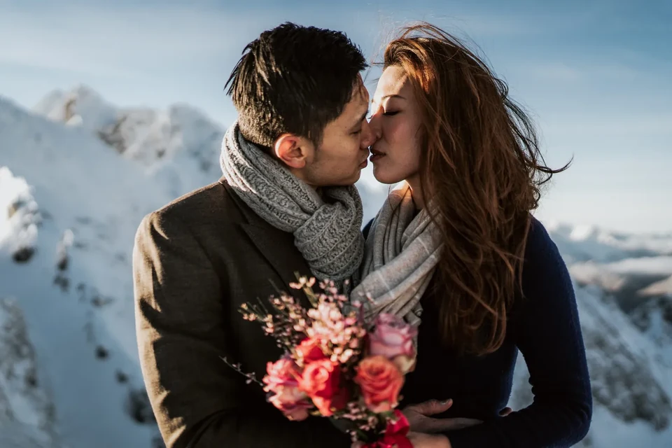
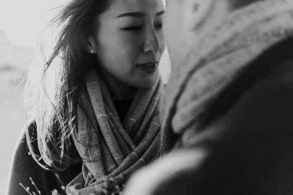
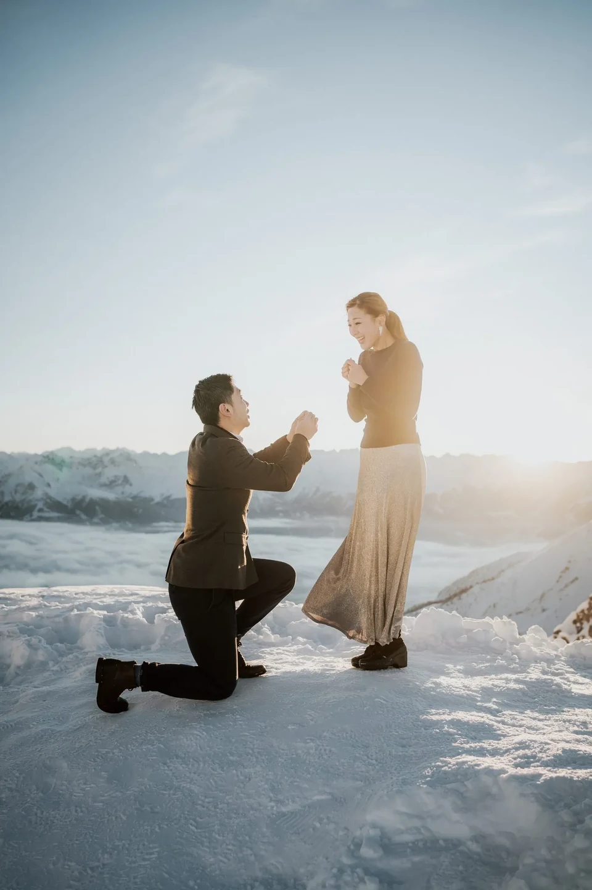
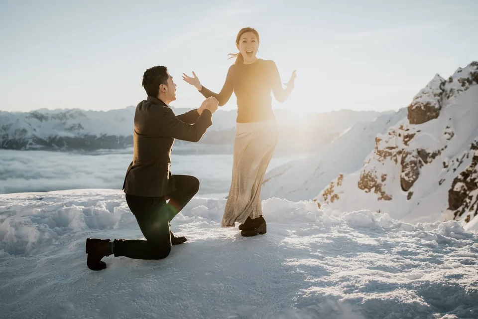
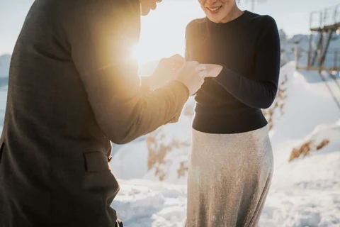
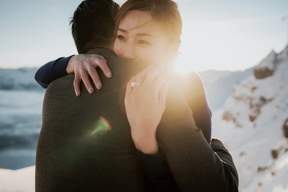
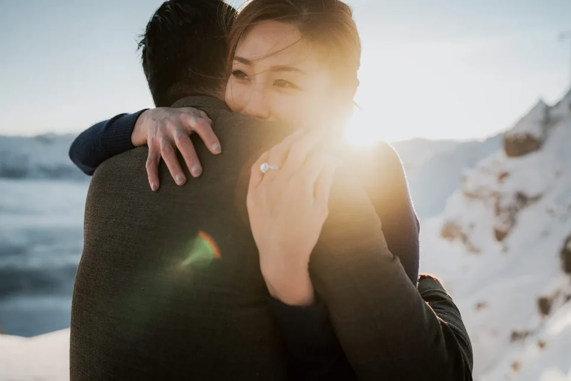
Wie auch immer ihr euch euren Tag vorstellt — ein stiller Sonnenaufgang, ein Gipfel, ein See für euch allein — wir planen ihn um euch beide und fotografieren ihn so, wie er sich wirklich angefühlt hat.
Wir verwenden Cookies für anonyme Statistik (Google Analytics über Google Tag Manager), um die Website zu verbessern. Die Analyse läuft nur mit deiner Einwilligung. Datenschutz